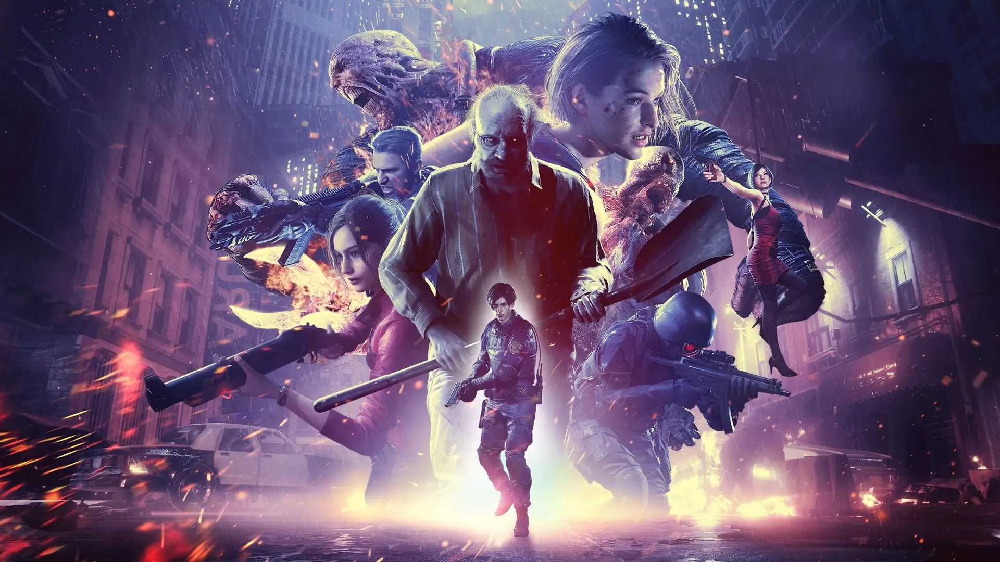

O jogo The Last Escape é um jogo inspirado na renomada frânquia de jogos do gênero Survival Horror, Resident Evil. Porém, o jogo trás uma nova proposta, o jogo foi desenvolvido no gênero Escape Runner, ou seja, com o objetivo de alcançar a maior pontuação enquanto desvia de obstáculos.
Para isso, foi necessário a utilização do Canvas. Canvas é uma ferramenta que simula um quadro de pintura e foi utilizado a linguagem JavaScript devido a facilidade de desenhar dentro do Canvas. Contudo, um jogo é baseado em quadros por segundo o que nos leva ao conceito de Animação.
Animação é um conceito simples porém fundamental para todo jogo. Uma animação é uma sequência de imagens dentro de intervalo de tempo onde está sequência causa a ilusão de movimento. Sabendo disso devemos desenhar e limpar o Canvas constantemente para poder realizar o efeito de movimentação no jogo.
A movimentação do jogo pode ser realizada através de um laço de repetição que fica constantemente atualizando qual o próximo frame que deve ser desenhado.
Entretando, para a animação possuir variedades é necessário o uso de algumas funções que implementem o comportamento do jogo para que ele funcione como um jogo e não como um vídeo. Essas funções de comportamento devem estar atreladas ao controle do jogador e devem compor a função da lógica do jogo.
Sendo assim, implementamos uma função nomeada de "tick()" com o próposito de servir como o compositor de cada frame em um looping infinito. Dentro da "tick()" foi separada a lógica do desenho. Ou seja, a função "tick()" é uma função de organização do nosso código onde primeiro deve ocorrer a lógica e depois da lógica ter sido processada devemos desenhar de acordo com a lógica.
Entretanto, havia um problema, o jogo poderia rodar em uma velocidade diferente dependendo da máquina em que fosse executado e para isso precisamos utilizar de um conceito bem importante em desenvolvimento de jogos, o Delta Time. A fonte utilizada para compreender o Delta Time foi a: https://dev.to/dsaghliani/understanding-delta-time-in-games-3olf. Uma breve explicação sobre este conceito é que ele busca por normalizar o intervalo de tempo que se passou entre um frame e outro. Caso uma máquina não fosse capaz de rodar o jogo tão rápido, ele estaria em um tipo de "Slow Motion". Com o Delta Time, isso não acontece, uma vez que sabemos o tempo que se passou entre um frame e outro e pode calcular a física do jogo utilizando o tempo passado e não uma lógica que calcula todo frame independente do tempo passado.
Para a física, foram utilizadas algumas equações do movimento de Newton como a de velocidade para saber o quanto era necessário deslocar o personagem. Também foi pensando em utilizar estatística de forma bem simples para terminar a probabilidade de alguns obstáculos aparecerem e qual o tipo de obstáculo apareceria. Tornando o jogo dinâmico e aleatório.